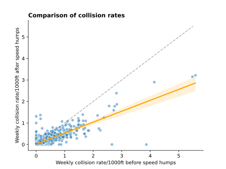

About me
I am a Math PhD, programmer, and complex problem-solver always up for hearing a pun or getting on a bicycle.
I am driven by improving people’s lives through technology, and am seeking to solve difficult problems in a motivated environment surrounded by other talented people. I am seeking opportunities to work in software engineering and data science.
Programming
I like solving problems with code. I have worked with several languages over the years, including Python, C++, Haskell, Asymptote, Rust, Javascript / TypeScript, SQL, Lua, and PHP. Most of my programming projects are on GitHub, with a summary of selected projects below:Analysing road safety
The purpose of this project was to predict collision rates in New York City using public road data and other geological features, and to identify key road infrastructures that can improve safety as economically as possible. Global analysis determined that traffic volume and street width were important factors, and individual feature analysis of speed humps determined that they reduce the collision rate by half!
Toki Pona syntax parser
The project goal was to implement a syntax parser for a human language. Using Haskell, I led our team to define production rules for a majority of the 140+ words and phrase structures in the constructed human language Toki Pona. To improve interactiveness, we added a visualisation of the resulting tree.
An example of the output is below:
$ dcl "mi wile sina" # (Translation: "I love you")
Start
│
├─ Subject Phrase
│ │
│ └─ mi
│
└─ Predicate
│
├─ Content
│ │
│ └─ wile
│
└─ Content
│
└─ sina
PhD Thesis
I received my PhD in mathematics from the University of Toronto. My thesis was in algebraic knot theory. The project goal was to expand an efficient implementation of a strong knot invariant to a larger class of objects.
I implemented novel algorithms and evaluated them on over 2000 test cases, and discovered a novel structure in the resulting data, which opened new avenues for research. Much of my work I implemented in software, extending a mathematica package, and writing a portion in Haskell.